10. Oracle Express 11g release 2
Passamos agora à adaptação para o Oracle Express 11g release 2 do que foi feito com o MySQL5.
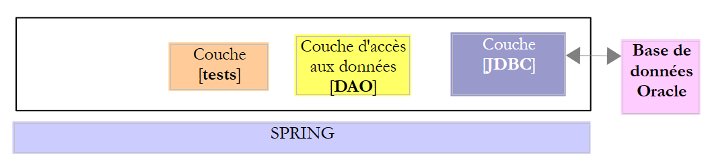 |
10.1. Configuração do ambiente de trabalho
10.1.1. Ambiente Eclipse
Iremos trabalhar com o seguinte ambiente Eclipse:
 |
Os projetos Oracle acima referidos encontram-se na pasta [<exemples>/spring-database-config\oracle\eclipse].
Nota: execute o comando [Alt-F5] para regenerar todos os projetos Maven.
Inicie o Oracle Express e o seu cliente [OraManager] (ver parágrafo 23.6). Vamos gerar:
- a base de dados [dbproduits] com o projeto [generic-create-dbproduits];
- a base de dados [dbproduitscategories] com o projeto [generic-create-dbproduitscategories];
10.1.2. Criação de utilizadores
Tudo decorre agora no [OraManager]. O SGBD do Oracle deve ser iniciado. Utilizam-se as credenciais system / system para o administrador do sistema (é necessário tê-lo configurado previamente). Vamos criar dois utilizadores:
- [DBPRODUITS / dbproduits], que será o proprietário da base de dados [dbproduits];
- [DBPRODUITSCATEGORIES / dbproduitscategories], que será o proprietário da base de dados [dbproduits];
 |
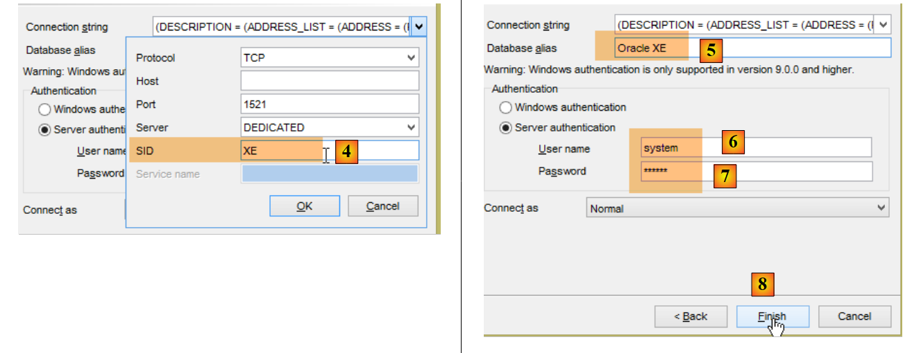 |
- em [6-7], os identificadores são [system / system];
 |
 |
- em [14]: substituir por dbproduits;
- em [16], o utilizador foi criado, mas não possui direitos suficientes para iniciar sessão. Vamos atribuir-lhe esses direitos através de um script SQL [17-18];
 |
- em [19], escrever o nome do utilizador em maiúsculas;
Repetimos o mesmo procedimento para criar o utilizador [DBPRODUITSCATEGORIES / dbproduitscategories]:
 |  |
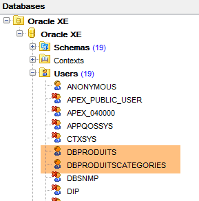 |
10.1.3. Instalação do controlador JDBC da Oracle no repositório Maven
O controlador JDBC da Oracle não está disponível nos repositórios centrais do Maven. É necessário descarregá-lo a partir do site da Oracle [http://www.oracle.com/technetwork/apps-tech/jdbc-112010-090769.html]:
 |
Depois de descarregado, é necessário instalá-lo no repositório Maven local. Isto é feito com o seguinte script:
"%M2_HOME%\bin\mvn.bat" install:install-file -Dfile=ojdbc6.jar -Dpackaging=jar -DgroupId=com.oracle.jdbc -DartifactId=ojdbc6 -Dversion=1.0
onde se substituirá [%M2_HOME%] pelo caminho do diretório de instalação do Maven (ver parágrafo 23.2). Feito isto, o controlador JDBC pode então ser importado para os projetos Maven através da configuração:
<dependency>
<groupId>com.oracle.jdbc</groupId>
<artifactId>ojdbc6</artifactId>
<version>1.0</version>
</dependency>
10.1.4. Geração da base de dados [dbproduits]
Agora que temos um utilizador [DBPRODUITS / dbproduits], vamos ligar-nos ao Oracle com estas credenciais:
 |
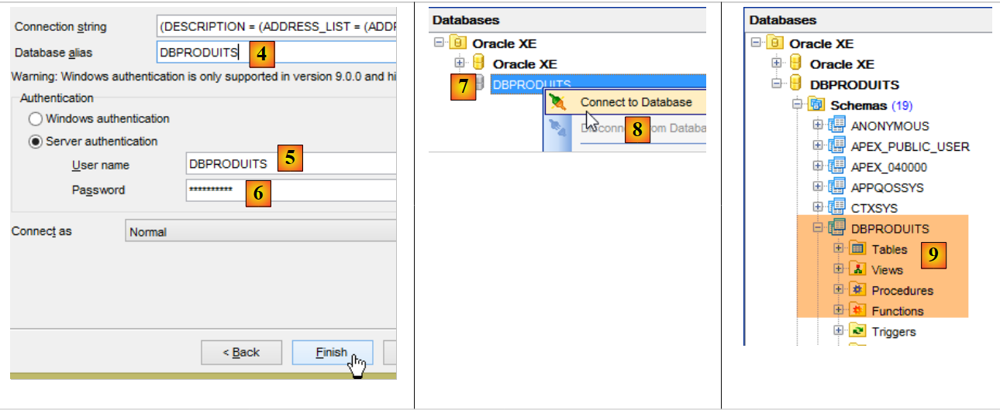 |
- em [6], introduzir dbproduits;
- em [9], a base de dados [DBPRODUITS] que iremos utilizar;
Na classe [ConfigJdbc] do projeto [oracle-config-jdbc], os parâmetros de ligação utilizados são os seguintes:
public final static String DRIVER_CLASSNAME = "oracle.jdbc.OracleDriver";
public final static String URL_DBPRODUITS = "jdbc:oracle:thin:@localhost:1521:xe";
public final static String USER_DBPRODUITS = "DBPRODUITS";
public final static String PASSWD_DBPRODUITS = "dbproduits";
public final static String URL_DBPRODUITSCATEGORIES = "jdbc:oracle:thin:@localhost:1521:xe";
public final static String USER_DBPRODUITSCATEGORIES = "DBPRODUITSCATEGORIES";
public final static String PASSWD_DBPRODUITSCATEGORIES = "dbproduitscategories";
Deve adaptá-los à sua configuração Oracle.
No projeto [oracle-config-jpa-eclipselink], a entidade JPA está definida da seguinte forma:
 |
package generic.jpa.entities.dbproduits;
import generic.jdbc.config.ConfigJdbc;
import javax.persistence.Column;
import javax.persistence.Entity;
import javax.persistence.GeneratedValue;
import javax.persistence.Id;
import javax.persistence.SequenceGenerator;
import javax.persistence.Table;
@Entity(name="Produit1")
@Table(name = ConfigJdbc.TAB_PRODUITS)
public class Produit {
// campos
@Id
@GeneratedValue(strategy=GenerationType.SEQUENCE,generator="genSeqProduits")
@SequenceGenerator(name="genSeqProduits",sequenceName="PRODUITS_SEQUENCE", allocationSize=5)
@Column(name = ConfigJdbc.TAB_PRODUITS_ID)
private Long id;
@Column(name = ConfigJdbc.TAB_PRODUITS_NOM, unique = true, length = 30, nullable = false)
private String nom;
@Column(name = ConfigJdbc.TAB_PRODUITS_CATEGORIE, nullable = false)
private int categorie;
@Column(name = ConfigJdbc.TAB_PRODUITS_PRIX, nullable = false)
private double prix;
@Column(name = ConfigJdbc.TAB_PRODUITS_DESCRIPTION, length = 100, nullable = false)
private String description;
...
}
- linhas 18-19: a estratégia de geração da chave primária da tabela [PRODUITS] é [strategy=GenerationType.SEQUENCE]. Para MySQL, tinha sido utilizada a estratégia [@GeneratedValue(strategy = GenerationType.IDENTITY)]. Com o Oracle Express 11g, esta estratégia não é utilizável;
- linha 18: indica-se que a chave primária será obtida através de um gerador de números, frequentemente designado por «sequências»;
- linha 19: o gerador de sequências (o atributo name faz referência ao gerador da linha 18) irá criar uma sequência denominada [PRODUITS_SEQUENCE] na base de dados [dbproduits]. Como se pretende garantir a portabilidade entre as implementações JPA, é importante atribuir um nome à sequência. Caso contrário, na ausência da linha 19, as três implementações JPA criarão sequências que não terão o mesmo nome, tornando impossível a utilização, por parte de JPA2, de uma base de dados criada por JPA1;
Estamos prontos para executar a configuração [generic-create-dbproduits-eclipselink]:
 |  |
A execução desta configuração cria dois objetos:
- uma tabela [PRODUITS];
- uma sequência denominada [PRODUITS_SEQUENCE]
 | 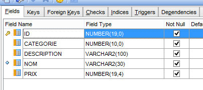 |
O DDL da tabela [PRODUITS] é o seguinte:
 |
A chave primária [ID] não é autoincrementada, ao contrário do que acontecia com a MySQL. No entanto, o projeto [spring-jdbc-03] pressupõe que o SGBD se encarrega de gerar as chaves primárias da tabela [PRODUITS]. Vamos criar um trigger ou um déclencheur. Um trigger é um procedimento armazenado no SGBD que é executado sob determinadas condições. Vamos criar um trigger que, a cada nova inserção, gere a chave primária do produto inserido a partir da sequência [PRODUITS_SEQUENCE] criada pela configuração JPA.
 |
- em [6], o trigger [PRODUITS_ID_TRIGGER] [4] será executado antes de cada inserção;
- em [7], um procedimento armazenado específico do SGBD do Oracle. Esta indica que o campo [ID] da linha que vai ser inserida deve ser inicializado com o seguinte valor do gerador denominado [PRODUITS_SEQUENCE];
 |
A base de dados [dbproduits] está agora pronta. Execute as seguintes configurações:
- [spring-jdbc-generic-01.IntroJdbc01];
- [spring-jdbc-generic-01.IntroJdbc02];
- [spring-jdbc-generic-03.JUnitTestDao1] ;
- [spring-jdbc-generic-03.JUnitTestDao2];
Todas elas devem ser bem-sucedidas.
10.1.5. Geração da base de dados [dbproduitscategories]
 |
Executamos agora o projeto [generic-create-dbproduitscategories], que irá gerar a base de dados [dbproduitscategories]. Antes disso, no [OraManager], iniciamos sessão com as credenciais do [DBPRODUITSCATEGORIES / dbproduitscategories] para podermos observar as alterações introduzidas na base de dados [dbproduitscategories]:
 |  |  |
 |  |
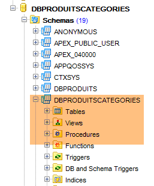 |
As entidades JPA utilizadas têm as seguintes estratégias de geração de chaves primárias:
[Categorie]
public class Categorie implements AbstractCoreEntity {
@Id
@GeneratedValue(strategy=GenerationType.SEQUENCE,generator="genSeqCategories")
@SequenceGenerator(name="genSeqCategories",sequenceName="CATEGORIES_SEQUENCE", allocationSize=5)
@Column(name = ConfigJdbc.TAB_JPA_ID)
protected Long id;
[Produit]
public class Produit implements AbstractCoreEntity {
// propriedades
@Id
@GeneratedValue(strategy=GenerationType.SEQUENCE,generator="genSeqProduits2")
@SequenceGenerator(name="genSeqProduits2",sequenceName="PRODUITS_SEQUENCE", allocationSize=5)
@Column(name = ConfigJdbc.TAB_JPA_ID)
protected Long id;
[Role]
public class Role implements AbstractCoreEntity {
// propriedades
@Id
@GeneratedValue(strategy=GenerationType.SEQUENCE,generator="genSeqRoles")
@SequenceGenerator(name="genSeqRoles",sequenceName="ROLES_SEQUENCE", allocationSize=5)
@Column(name = ConfigJdbc.TAB_JPA_ID)
protected Long id;
[User]
public class User implements AbstractCoreEntity {
// propriedades
@Id
@GeneratedValue(strategy=GenerationType.SEQUENCE,generator="genSeqUsers")
@SequenceGenerator(name="genSeqUsers",sequenceName="USERS_SEQUENCE", allocationSize=5)
@Column(name = ConfigJdbc.TAB_JPA_ID)
protected Long id;
[UserRole]
public class UserRole implements AbstractCoreEntity {
// propriedades
@Id
@GeneratedValue(strategy=GenerationType.SEQUENCE,generator="genSeqUsersRoles")
@SequenceGenerator(name="genSeqUsersRoles",sequenceName="USERS_ROLES_SEQUENCE", allocationSize=5)
@Column(name = ConfigJdbc.TAB_JPA_ID)
protected Long id;
Tal como foi feito para a base [dbproduits], serão geradas cinco sequências. Estas são utilizadas pelas implementações JPA para gerar as chaves primárias. As implementações JPA não utilizam gatilhos, tal como fizemos anteriormente, mas consultam as sequências para obter a chave primária seguinte. Nós, por nosso lado, iremos gerar as chaves primárias também com gatilhos. Estes são necessários para o projeto [spring-jdbc-04].
Executamos a configuração [generic-create-dbproduitscategories-eclipselink]:
 | 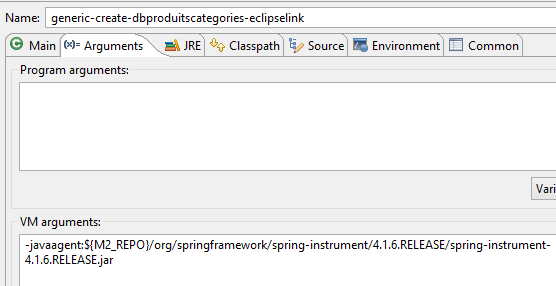 |
e obtemos o seguinte resultado:
 |
Em seguida, geramos cinco triggers para gerar as chaves primárias das cinco tabelas:
 |
Os triggers estão associados às tabelas da seguinte forma:
CATEGORIES | CATEGORIES_ID_TRIGGER | CATEGORIES_SEQUENCE |
PRODUITS | PRODUITS_ID_TRIGGER | PRODUITS_SEQUENCE |
ROLES | ROLES_ID_TRIGGER | ROLES_SEQUENCE |
USERS | USERS_ID_TRIGGER | USERS_SEQUENCE |
USERS_ROLES | USERS_ROLES_ID_TRIGGER | USERS_ROLES_SEQUENCE |
 |
O projeto [spring-jdbc-04] requer que a coluna [VERSIONING] tenha um valor por defeito em cada uma das tabelas:
 |  |
Faz-se isto para as cinco tabelas.
Agora, execute as configurações:
- [spring-jdbc-generic-04.JUnitTestDao];
- [spring-jpa-generic-JUnitTestDao-hibernate-eclipselink] ;
Ambas devem ser bem-sucedidas.
10.2. Configuração da camada JDBC
 | 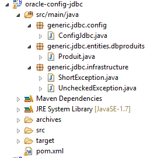 |
O projeto [oracle-config-jdbc] configura a camada [JDBC] da seguinte arquitetura de testes:
 |
O projeto é análogo ao projeto de configuração [mysql-config-jdbc] da camada JDBC do SGBD MySQL (ver parágrafo 3.3). Apresentamos apenas as alterações:
O ficheiro [pom.xml] importa o controlador JDBC da Oracle:
<project xmlns="http://maven.apache.org/POM/4.0.0" xmlns:xsi="http://www.w3.org/2001/XMLSchema-instance"
xsi:schemaLocation="http://maven.apache.org/POM/4.0.0 http://maven.apache.org/xsd/maven-4.0.0.xsd">
<modelVersion>4.0.0</modelVersion>
<groupId>dvp.spring.database</groupId>
<artifactId>generic-config-jdbc</artifactId>
<version>0.0.1-SNAPSHOT</version>
<name>configuration generic jdbc</name>
<parent>
<groupId>org.springframework.boot</groupId>
<artifactId>spring-boot-starter-parent</artifactId>
<version>1.2.3.RELEASE</version>
</parent>
<dependencies>
<!-- dependências variáveis ********************************************** -->
<!-- controlador JDBC do SGBD -->
<dependency>
<groupId>com.oracle.jdbc</groupId>
<artifactId>ojdbc6</artifactId>
<version>1.0</version>
</dependency>
<!-- dependências constantes ********************************************** -->
....
</dependencies>
...
</project>
- linhas 18-22: o controlador JDBC da Oracle substitui o controlador MySQL;
A segunda alteração encontra-se na classe [ConfigJdbc], que define os identificadores de acesso às bases de dados:
// parâmetros de ligação
public final static String DRIVER_CLASSNAME = "oracle.jdbc.OracleDriver";
public final static String URL_DBPRODUITS = "jdbc:oracle:thin:@localhost:1521:xe";
public final static String USER_DBPRODUITS = "DBPRODUITS";
public final static String PASSWD_DBPRODUITS = "dbproduits";
public final static String URL_DBPRODUITSCATEGORIES = "jdbc:oracle:thin:@localhost:1521:xe";
public final static String USER_DBPRODUITSCATEGORIES = "DBPRODUITSCATEGORIES";
public final static String PASSWD_DBPRODUITSCATEGORIES = "dbproduitscategories";
A terceira alteração diz respeito ao número máximo de parâmetros que um pode suportar:
// número máximo de parâmetros de um [PreparedStatement]
public final static int MAX_PREPAREDSTATEMENT_PARAMETERS = 1000;
O teste [JUnitTestPushTheLimits] gera ordens SQL para 5000 produtos, que, por sua vez, irão gerar [PreparedStatement] com 5000 parâmetros. O MySQL suportava este valor, mas o Oracle não. Reduzimos esse valor para 1000 e agora funciona.
10.3. Configuração da camada JPA EclipseLink
 |  |
Nota: execute o [Alt-F5] para regenerar todos os projetos Maven.
O projeto [oracle-config-jpa-eclipseLink] configura a camada [JPA] da arquitetura de testes:
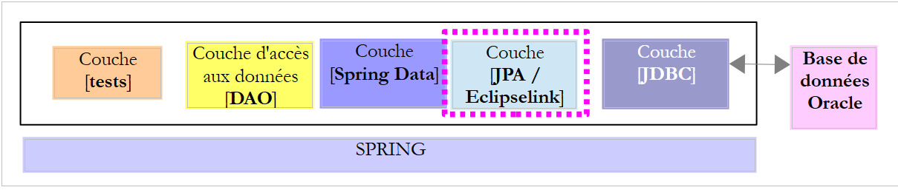 |
O projeto é análogo ao projeto de configuração [mysql-config-jpa-eclipselink] (ver parágrafo 7.3) da camada JPA Eclipselink do SGBD MySQL. Apresentamos apenas as alterações:
A primeira encontra-se na classe [ConfigJpa], na definição do bean [jpaVendorAdapter]:
// o provedor JPA
@Bean
public JpaVendorAdapter jpaVendorAdapter() {
// Nota: as entidades JPA e a configuração do EclipseLink encontram-se no ficheiro META-INF/persistence.xml
EclipseLinkJpaVendorAdapter eclipseLinkJpaVendorAdapter = new EclipseLinkJpaVendorAdapter();
eclipseLinkJpaVendorAdapter.setShowSql(false);
eclipseLinkJpaVendorAdapter.setDatabase(Database.ORACLE);
eclipseLinkJpaVendorAdapter.setGenerateDdl(true);
return eclipseLinkJpaVendorAdapter;
}
- linha 7: indica-se à implementação JPA que irá trabalhar com uma base de dados Oracle. A implementação JPA irá então adotar tanto os tipos de dados proprietários como o SQL proprietário da Oracle.
A segunda alteração diz respeito à estratégia de geração de chaves primárias. A nova estratégia foi apresentada no parágrafo 10.1.
10.4. Configuração da camada JPA do Hibernate
 | 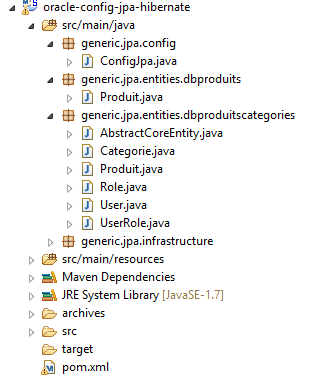 |
Nota: execute o [Alt-F5] para regenerar todos os projetos Maven.
O projeto [oracle-config-jpa-hibernate] é análogo ao projeto [mysql-config-jpa-hibernate] (parágrafo 6.3), com as mesmas alterações que estiveram na base da migração do [mysql-config-jpa-eclipselink] para o projeto [oracle-config-jpa-eclipselink] (parágrafo 10.3).
Após estas alterações, a execução da configuração [spring-jpa-generic-JUnitTestDao-hibernate-eclipselink] deverá ser bem-sucedida.
10.5. Configuração da camada JPA OpenJpa
 | 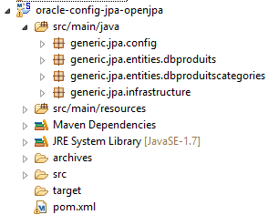 |
Nota: execute o [Alt-F5] para regenerar todos os projetos Maven.
O projeto [oracle-config-jpa-openjpa] é análogo ao projeto [mysql-config-jpa-openjpa] (parágrafo 8.3), com as mesmas alterações que estiveram na base da migração do [mysql-config-jpa-eclipselink] para o projeto [oracle-config-jpa-eclipselink] (parágrafo 10.3).
Após estas alterações, a execução da configuração [spring-jpa-generic-JUnitTestDao-openjpa] deverá ser bem-sucedida.
 |  |